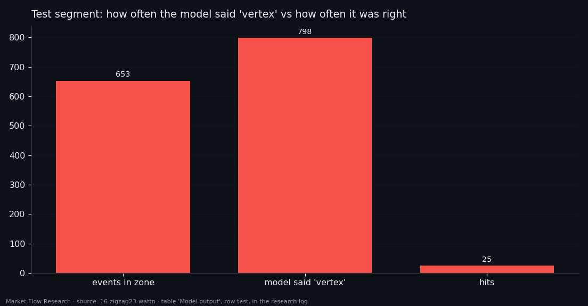
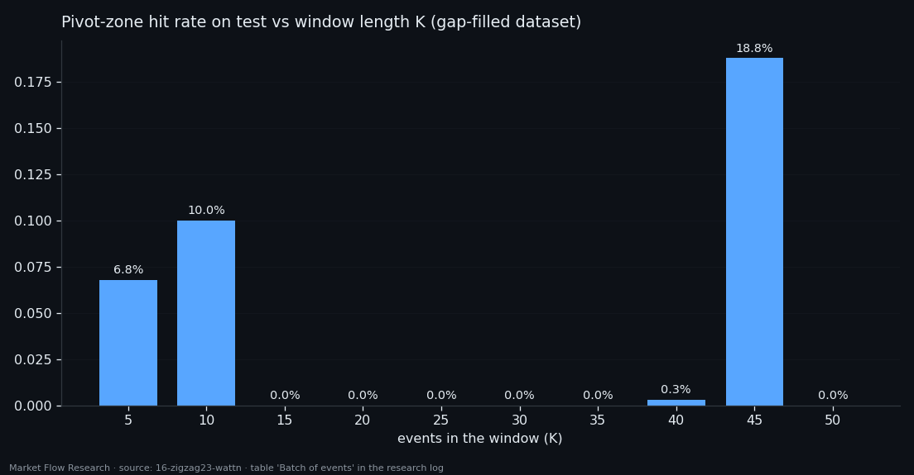
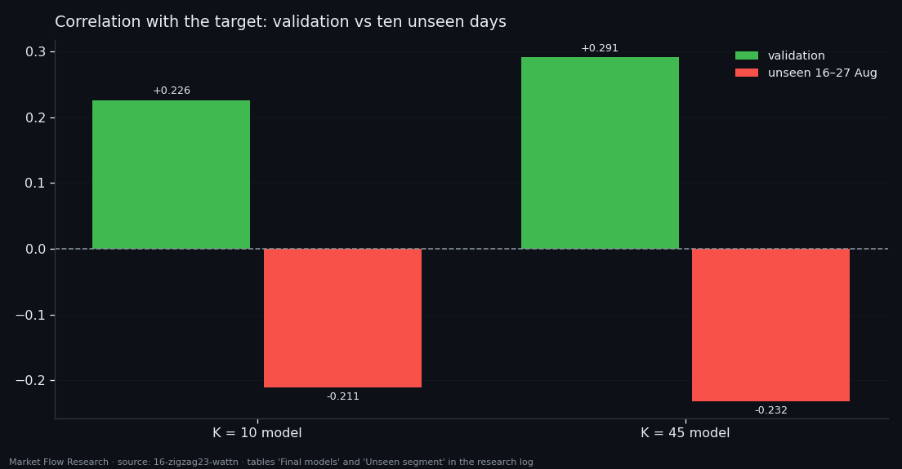

A Network That Found the Pivot Zone — Only Where It Was Trained
We asked an attention network to do one specific thing: tell when price is near the end of a 2.3% zigzag leg — within 10% of the pivot and no more than 40 events from it. On the weeks it trained on it caught 65% of those zones. On validation, 4%. On test, 3.8%. On ten days after the dataset ended, its correlation with the target turned negative. This is a measured negative result, and the measuring tool it produced — the pivot zone — is what we carry forward.
① Measure the distance to the pivot, not the average error
The target is the zigzag of this series at its larger scale: pivots of a 2.3% zigzag drawn on a 90-event EMA of price, and each event's position in its leg rescaled to −1 at the low pivot and +1 at the high one (min-max, so the distance to a vertex means a distance in price). The inputs are the 13 × 4 matrix of averaged book features from the previous article.
The question was not "what number does the model output on average" but does its output reach the vertex. So every report carries a second metric: the pivot zone, defined by two numbers — `|y| ≥ 0.90` and no further than ±40 events (about 2.3 hours) from the pivot. The band alone is not enough: in a long leg price can fall back almost to its start, and `|y| ≥ 0.95` occurs 972 events away from any pivot. With both conditions the zone takes 2,624 events, 6.5% of the series, exactly one window per pivot, and keeps the smoothed price within 1.27% of the vertex.
A model "says vertex" when `|p| ≥ 0.90`. Hits, misses, false alarms, and — where it spoke — how many events it was from the nearest pivot.

② One event in, 26,049 parameters — memorisation
The network is `wattn` — attention over the 13 EMA periods with a learned query for the readout, 26,049 parameters, trained with a spread penalty so its output is not squashed to the middle (output spread 0.969 of the target's).
The spread came back; the vertices did not. On the training weeks the model nearly reproduces them: the remaining distance to the vertex in the zone is 0.161 against a floor of 0.035, and 1,049 of 1,606 zone events are hit. On validation, 12 of 275. On test, 25 of 653 — while the model said "vertex" 798 times, a precision of 3%, with a median of 252 events (≈ 15 hours) between a call and the nearest pivot. It sees tops in the middle of legs.
Over the whole test segment: MAE 0.554 against 0.479 for a constant, R² −0.46. Only the sign (57.1%) stays above a coin. Upper vertices come out better than lower ones (0.73 vs 1.06 remaining distance). 26 thousand parameters on 23 thousand events is enough to remember, and not enough to generalise.

③ Smoother target, more context — no curve
Two fixes were tried on the target and the input.
Smoothing between zones. The leg target twitches between pivots. Of eight ways to calm it, a moving median removed reversals (×563) but not roughness (×1.15), and a straight line through the leg killed the link to the features (max |r| from 0.294 to 0.241). An EMA did both jobs: a 20-event EMA cut the oscillation ×4.7 while slightly raising the mean correlation with the features (0.1725 vs 0.1667). The cost is a lag of about half the period.
A batch of events. Instead of one event, the network saw windows of K = 5 … 50 events (17 minutes to almost 3 hours), on a dataset with time gaps filled so long windows survive. Neither MAE nor sign grows with K. Hits jump: 6.8% at K = 5, 10% at K = 10, zero from 15 to 35, 18.8% at 45, zero at 50. Neighbouring settings giving opposite results is the signature of unstable training — the model either calls vertices often or never — not of a useful context length.

④ Ten unseen days: the sign flips
The two finalists after a grid search: K = 10 (width 64, one layer) catches 12.3% of the zone on validation with sign 61.8% and Pearson +0.226; K = 45 (two layers) catches 18.8% with Pearson +0.291. Dropping the one or two weakest features even helps a little (+2.6 and +0.9 points of hits).
Then the models met 16–27 August 2026 — raw data outside the dataset, rebuilt through the same chain. Both flip: Pearson −0.211 and −0.232, sign 45.7% and 46.2%, R² about −1. The K = 45 model, best on validation, hit the zone zero times out of 77 events. The K = 10 model hit 24 of 153 — with 363 vertex calls, a precision of 6.6%.
Neither model is tradeable; both lose to a coin where nobody trained them. What survives is the method: a zone defined by two numbers takes 6–7% of events on any segment and exposes a gap that neither MAE (0.55 vs 0.48 for the constant) nor output spread could show. The next study keeps the target and the zone and changes the network.

Reproduce this study
- Research log (.md, Ukrainian): goal, data, plan, scripts, every confirmed stage and table — enough to rerun the study
- Reproduction kit (.zip): the study's scripts, project rules and base scripts that build every class
If this changed how you read the tape, the natural next step is Volume Is the Fuel — Not the Steering Wheel — We recorded the Binance order book every second for six coins over five months and ran eighteen tests on what volume really does.
Volume Is the Fuel — Not the Steering Wheel
We recorded the Binance order book every second for six coins over five months and ran eighteen tests on what volume really does.
About Market Research Lab — What We Collect and Why
Most market commentary is storytelling.
From Calm to Calm: a Standard for What Counts as a Signal (BTC)
We stopped defining market signals with a stopwatch.
The Wall That Goes Quiet: What Resting Liquidity Predicts
We measured resting limit liquidity sitting on both sides of the book second by second across six coins, and asked the only question that matters:….
Comments
Discussion is powered by GitHub. Enable it by adding secrets/giscus.json (repo IDs from giscus.app).